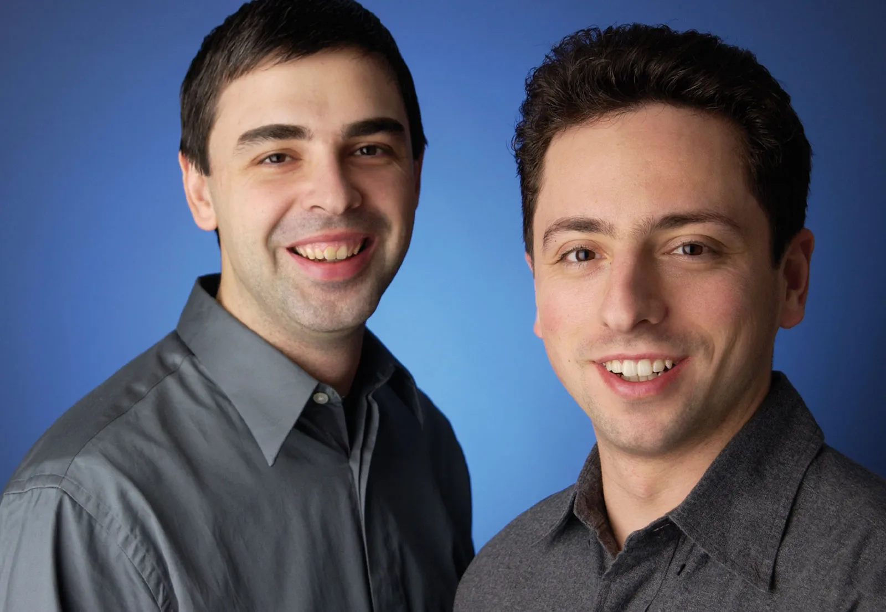
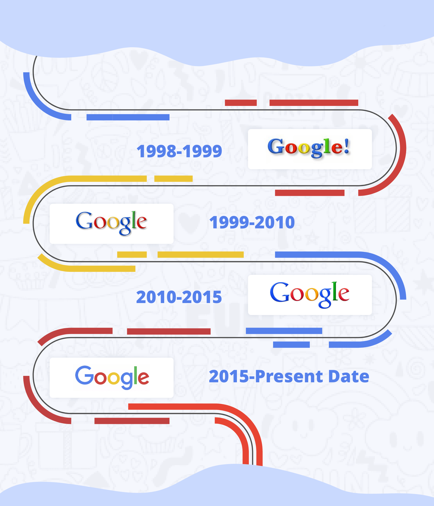

LLC is an American multinational technology company that focuses on search engine technology, online advertising, cloud computing, computer software, quantum computing, e-commerce, artificial intelligence, and consumer electronics. It has been referred to as the "most powerful company in the world" and one of the world's most valuable brands due to its market dominance, data collection, and technological advantages in the area of artificial intelligence. It is considered one of the Big Five American information technology companies, alongside Amazon, Apple, Meta, and Microsoft.
LLC is an American multinational technology company that focuses on search engine technology, online advertising, cloud computing, computer software, quantum computing, e-commerce, artificial intelligence, and consumer electronics. It has been referred to as the "most powerful company in the world" and one of the world's most valuable brands due to its market dominance, data collection, and technological advantages in the area of artificial intelligence. It is considered one of the Big Five American information technology companies, alongside Amazon, Apple, Meta, and Microsoft.
 was founded on September 4, 1998, by Larry Page and Sergey Brin while they were PhD students at Stanford University in California. Together they own about 14% of its publicly listed shares and control 56% of the stockholder voting power through super-voting stock. The company went public via an initial public offering (IPO) in 2004. In 2015,
was founded on September 4, 1998, by Larry Page and Sergey Brin while they were PhD students at Stanford University in California. Together they own about 14% of its publicly listed shares and control 56% of the stockholder voting power through super-voting stock. The company went public via an initial public offering (IPO) in 2004. In 2015,  was reorganized as a wholly owned subsidiary of Alphabet Inc.
was reorganized as a wholly owned subsidiary of Alphabet Inc.  is Alphabet's largest subsidiary and is a holding company for Alphabet's Internet properties and interests. Sundar Pichai was appointed CEO of
is Alphabet's largest subsidiary and is a holding company for Alphabet's Internet properties and interests. Sundar Pichai was appointed CEO of  on October 24, 2015, replacing Larry Page, who became the CEO of Alphabet. On December 3, 2019, Pichai also became the CEO of Alphabet.
on October 24, 2015, replacing Larry Page, who became the CEO of Alphabet. On December 3, 2019, Pichai also became the CEO of Alphabet.
The company has since rapidly grown to offer a multitude of products and services beyond  Search, many of which hold dominant market positions. These products address a wide range of use cases, including email (Gmail), navigation (Maps), cloud computing (Cloud), web browsing (Chrome), video sharing (YouTube), productivity (Workspace), operating systems (Android), cloud storage (Drive), language translation (Translate), photo storage (Photo), video calling (Meet), smart home (Nest), smartphones (Pixel), wearable technology (Fitbit), gaming (Stadia), music streaming (YouTube Music), video on demand (TV), artificial intelligence (Assistant), machine learning APIs (TensorFlow), AI chips (TPU), and more. Discontinued
Search, many of which hold dominant market positions. These products address a wide range of use cases, including email (Gmail), navigation (Maps), cloud computing (Cloud), web browsing (Chrome), video sharing (YouTube), productivity (Workspace), operating systems (Android), cloud storage (Drive), language translation (Translate), photo storage (Photo), video calling (Meet), smart home (Nest), smartphones (Pixel), wearable technology (Fitbit), gaming (Stadia), music streaming (YouTube Music), video on demand (TV), artificial intelligence (Assistant), machine learning APIs (TensorFlow), AI chips (TPU), and more. Discontinued  products include Glass,
products include Glass,  +, Reader, Play Music, Nexus, Hangouts, and Inbox by Gmail.
+, Reader, Play Music, Nexus, Hangouts, and Inbox by Gmail.
 strives for ambitious technological innovations aimed at solving humanity's biggest problems. Some of these include quantum computing (Sycamore), self-driving cars (Waymo, formerly the
strives for ambitious technological innovations aimed at solving humanity's biggest problems. Some of these include quantum computing (Sycamore), self-driving cars (Waymo, formerly the  Self-Driving Car Project), smart cities (Sidewalk Labs), and transformer models (
Self-Driving Car Project), smart cities (Sidewalk Labs), and transformer models ( Brain).
Brain).
 and YouTube are the two most visited websites worldwide followed by Facebook and Twitter.
and YouTube are the two most visited websites worldwide followed by Facebook and Twitter.  is also the largest search engine, mapping and navigation application, email provider, office suite, video sharing platform, photo and cloud storage provider, mobile operating system, web browser, ML framework, and AI virtual assistant provider in the world as measured by market share. On the list of most valuable brands,
is also the largest search engine, mapping and navigation application, email provider, office suite, video sharing platform, photo and cloud storage provider, mobile operating system, web browser, ML framework, and AI virtual assistant provider in the world as measured by market share. On the list of most valuable brands,  is ranked second by Forbes and fourth by Interbrand. It has received significant criticism involving issues such as privacy concerns, tax avoidance, censorship, search neutrality, antitrust and abuse of its monopoly position.
is ranked second by Forbes and fourth by Interbrand. It has received significant criticism involving issues such as privacy concerns, tax avoidance, censorship, search neutrality, antitrust and abuse of its monopoly position.
Larry & Sergey

 began in January 1996 as a research project by Larry Page and Sergey Brin when they were both PhD students at Stanford University in California. The project initially involved an unofficial "third founder", Scott Hassan, the original lead programmer who wrote much of the code for the original
began in January 1996 as a research project by Larry Page and Sergey Brin when they were both PhD students at Stanford University in California. The project initially involved an unofficial "third founder", Scott Hassan, the original lead programmer who wrote much of the code for the original  Search engine, but he left before
Search engine, but he left before  was officially founded as a company; Hassan went on to pursue a career in robotics and founded the company Willow Garage in 2006.
was officially founded as a company; Hassan went on to pursue a career in robotics and founded the company Willow Garage in 2006.
While conventional search engines ranked results by counting how many times the search terms appeared on the page, they theorized about a better system that analyzed the relationships among websites. They called this algorithm PageRank; it determined a website's relevance by the number of pages, and the importance of those pages that linked back to the original site. Page told his ideas to Hassan, who began writing the code to implement Page's ideas.
Page and Brin originally nicknamed the new search engine "BackRub", because the system checked backlinks to estimate the importance of a site. Hassan as well as Alan Steremberg were cited by Page and Brin as being critical to the development of  . Rajeev Motwani and Terry Winograd later co-authored with Page and Brin the first paper about the project, describing PageRank and the initial prototype of the
. Rajeev Motwani and Terry Winograd later co-authored with Page and Brin the first paper about the project, describing PageRank and the initial prototype of the  search engine, published in 1998. Héctor GarcÃa-Molina and Jeff Ullman were also cited as contributors to the project. PageRank was influenced by a similar page-ranking and site-scoring algorithm earlier used for RankDex, developed by Robin Li in 1996, with Larry Page's PageRank patent including a citation to Li's earlier RankDex patent; Li later went on to create the Chinese search engine Baidu.
search engine, published in 1998. Héctor GarcÃa-Molina and Jeff Ullman were also cited as contributors to the project. PageRank was influenced by a similar page-ranking and site-scoring algorithm earlier used for RankDex, developed by Robin Li in 1996, with Larry Page's PageRank patent including a citation to Li's earlier RankDex patent; Li later went on to create the Chinese search engine Baidu.
Eventually, they changed the name to  ; the name of the search engine was a play on the word googol, a very large number written 10100 (1 followed by 100 zeros), picked to signify that the search engine was intended to provide large quantities of information.
; the name of the search engine was a play on the word googol, a very large number written 10100 (1 followed by 100 zeros), picked to signify that the search engine was intended to provide large quantities of information.
The domain name www. .com was registered on September 15, 1997, and the company was incorporated on September 4, 1998. It was based in the garage of Susan Wojcicki in Menlo Park, California. Craig Silverstein, a fellow PhD student at Stanford, was hired as the first employee.
.com was registered on September 15, 1997, and the company was incorporated on September 4, 1998. It was based in the garage of Susan Wojcicki in Menlo Park, California. Craig Silverstein, a fellow PhD student at Stanford, was hired as the first employee.
Products and sevices

 indexes billions of web pages to allow users to search for the information they desire through the use of keywords and operators. According to comScore market research from November 2009,
indexes billions of web pages to allow users to search for the information they desire through the use of keywords and operators. According to comScore market research from November 2009,  Search is the dominant search engine in the United States market, with a market share of 65.6%. In May 2017,
Search is the dominant search engine in the United States market, with a market share of 65.6%. In May 2017,  enabled a new "Personal" tab in
enabled a new "Personal" tab in  Search, letting users search for content in their
Search, letting users search for content in their  accounts' various services, including email messages from Gmail and photos from
accounts' various services, including email messages from Gmail and photos from  Photos.
Photos.
 launched its
launched its  News service in 2002, an automated service which summarizes news articles from various websites.
News service in 2002, an automated service which summarizes news articles from various websites.  also hosts
also hosts  Books, a service which searches the text found in books in its database and shows limited previews or and the full book where allowed.
Books, a service which searches the text found in books in its database and shows limited previews or and the full book where allowed.
History of Google

 was officially launched in 1998 by Larry Page and Sergey Brin to market
was officially launched in 1998 by Larry Page and Sergey Brin to market  Search, which has become the most used web-based search engine. Larry Page and Sergey Brin, students at Stanford University in California, developed a search algorithm at first known as "BackRub" in 1996, with the help of Scott Hassan and Alan Steremberg. The search engine soon proved successful and the expanding company moved several times, finally settling at Mountain View in 2003. This marked a phase of rapid growth, with the company making its initial public offering in 2004 and quickly becoming one of the world's largest media companies. The company launched
Search, which has become the most used web-based search engine. Larry Page and Sergey Brin, students at Stanford University in California, developed a search algorithm at first known as "BackRub" in 1996, with the help of Scott Hassan and Alan Steremberg. The search engine soon proved successful and the expanding company moved several times, finally settling at Mountain View in 2003. This marked a phase of rapid growth, with the company making its initial public offering in 2004 and quickly becoming one of the world's largest media companies. The company launched  News in 2002, Gmail in 2004,
News in 2002, Gmail in 2004,  Maps in 2005,
Maps in 2005,  Chrome in 2008, and the social network known as
Chrome in 2008, and the social network known as  + in 2011 (which was shut down in April 2019), in addition to many other products. In 2015,
+ in 2011 (which was shut down in April 2019), in addition to many other products. In 2015,  became the main subsidiary of the holding company Alphabet Inc.
became the main subsidiary of the holding company Alphabet Inc.
The search engine went through many updates in attempts to eradicate search engine optimization
 has engaged in partnerships with NASA, AOL, Sun Microsystems, News Corporation, Sky UK, and others. The company set up a charitable offshoot,
has engaged in partnerships with NASA, AOL, Sun Microsystems, News Corporation, Sky UK, and others. The company set up a charitable offshoot,  .org, in 2005.
.org, in 2005.
Timeline of Google Search
| Time period | Development |
|---|---|
| 1996-1997 | Development of basic technology, launch of search engine, attachments like gmail and classroom come later. |
| 2000 | |
| 2001-2004 | |
| 2002 onward | The beginning of explicitly announced search algorithm updates. |
| 2008-2010 | |
| 2005,2009,2012 | |
| 2009-2010 | Caffeine update for faster indexing of the web and fresher and on-topic search results. |
| 2011-2014 | |
| 2012 onward | |
| 2013-2014-2015 onward | |
| 2019 April | In early April 2019, a large de-indexing bug was reported to be dropping pages out of the index. |